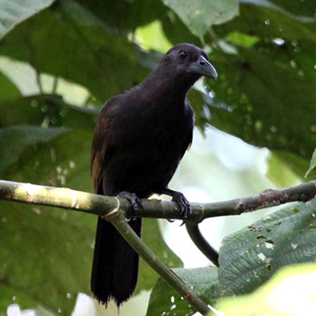

|

Genus : |
Paradise-crow (Lycocorax pyrrhopterus) หรือรู้จักในอีกชื่อคือ silky crow เป็นนกอีกาสวรรค์ขนาดกลางและเป็นนกเพียงไม่กี่สายพันธุ์ที่ในหนึ่งช่วงชีวิตจะมีคู่รักแค่ตัวเดียว ถิ่นอาศัยอยู่ที่ทางเหนือของหมู่เกาะโมลุกกะ ประเทศอินโดนีเซีย ส่วนใหญ่กินอาหารจำพวกผลไม้และแมลงเป็นหลัก ลักษณะ : มีความยาวหัวจรดหางประมาณ 34ซม. มีขนสีดำอ่อนนุ่มสลวยปกคลุมทั้งตัว มีจะงอยปากสีดำ ตาสีแดงเข้ม ตัวเมียจะมีขนาดเล็กกว่าตัวผู้ ช่วงเวลาในการสืบพันธุ์จะอยู่ในช่วงเดือน ธันวาคม - มิถุนายน |